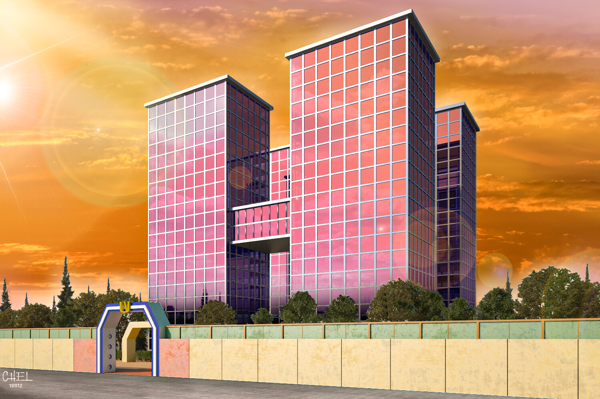
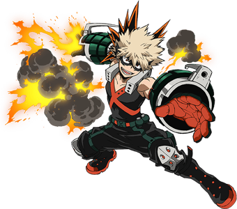
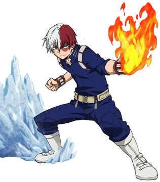

Sobre a U.A.
A U.A. é a principal escola de heróis do Japão, onde jovens treinam para dominar suas individualidades e proteger o mundo.
Treine para se tornar um herói profissional!
A U.A. é a principal escola de heróis do Japão, onde jovens treinam para dominar suas individualidades e proteger o mundo.
Cada herói possui um poder único, chamado Individualidade.
Conheça tres alunos da turma 1-A se tornando heróis!

Individualidade: One For All
Embora tenha nascido sem dom, Izuku conseguiu chamar a atenção do lendário herói All Might devido ao seu heroísmo inato e, desde então, tornou-se seu aprendiz mais próximo, bem como um aluno da Classe 1-A do Colégio U.A.. All Might passou seu dom para Izuku, fazendo dele o nono portador do One For All.

Individualidade: Explosão
Katsuki Bakugo é um personagem complexo cuja rivalidade com Midoriya serve como um motor central para o desenvolvimento de ambos os personagens. Sua busca por ser o "maior herói de todos os tempos" o motiva a superar desafios extremos, e sua jornada de crescimento pessoal, de um valentão para um líder mais compreensivo, é um dos arcos narrativos mais elogiados da série.
Meio Fogo / Meio Gelo
Shoto vem de uma família disfuncional e foi criado por seu pai, o herói Endeavor, com o único propósito de superar All Might. Como rebelião contra seu pai, ele inicialmente se recusa a usar seus poderes de fogo. Ao longo da série, ele aprende a aceitar e a dominar ambas as metades de seu poder, tornando-se mais sociável e um herói poderoso e equilibrado.
Conheça os piores vilões da história de My Hero Academia!

chamas azuis extremamente quentes
Dabi, o vilão de My Hero Academia, é Toya Todoroki, o filho mais velho do herói Endeavor. Ele sobreviveu a um incêndio e usa sua poderosa, mas autodestrutiva, "Chama Azul" para buscar vingança. Seu objetivo é destruir a reputação de seu pai e a sociedade heroica que ele representa, motivado por um passado de rejeição e abuso.

Deterioração
Tomura Shigaraki tem um passado trágico. Ele é neto de Nana Shimura, a mentora anterior de All Might. Sua individualidade manifestou-se acidentalmente quando ele tinha cinco anos, fazendo com que desintegrasse e matasse toda a sua família, incluindo seu pai abusivo. Resgatado e manipulado por All For One, ele foi doutrinado no ódio aos heróis e à sociedade, que ele acredita terem falhado em salvá-lo.
 vem ler a luta final
vem ler a luta final